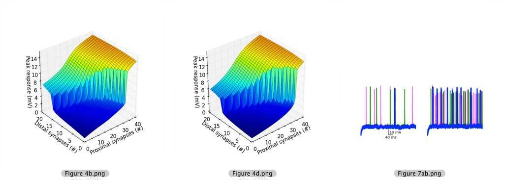

This is the model associated with the paper: Behabadi BF, Polsky A, Jadi M, Schiller J, Mel BW Location-dependent excitatory synaptic interactions in pyramidal neuron dendrites. PLoS Comput Biol. 2012;8(7) The code here reproduces Figures 4b, 4d, and 7ab from the paper. Usage: ./runall.sh # This will generate 2 h5 files in data/ and 3 png files in figs/ Dependencies: NEURON 7.0 - 7.3 Python 2.5 - 2.7 Numpy 1.5.1 - 1.7.1 PyTables 2.1.2 - 2.4.0 Matplotlib 1.0.1 - 1.1.1 Notes: Figure 7ab traces may not exactly match those in paper due to PRNG issues. Will likely work with other versions of above dependencies with minor tweaks. 20140208 Note from the ModelDB administrator: Because I already had neuron with python, easy_install, numpy, and matplotlib installed, I only needed to install the additional packages with commands sudo easy_install cython sudo easy_install numexpr sudo easy_install tables Then the script ./runall.sh created the expected images in the fig folder: 